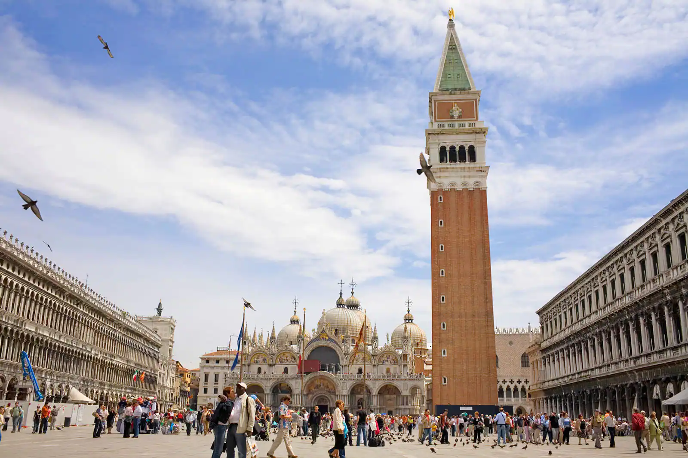
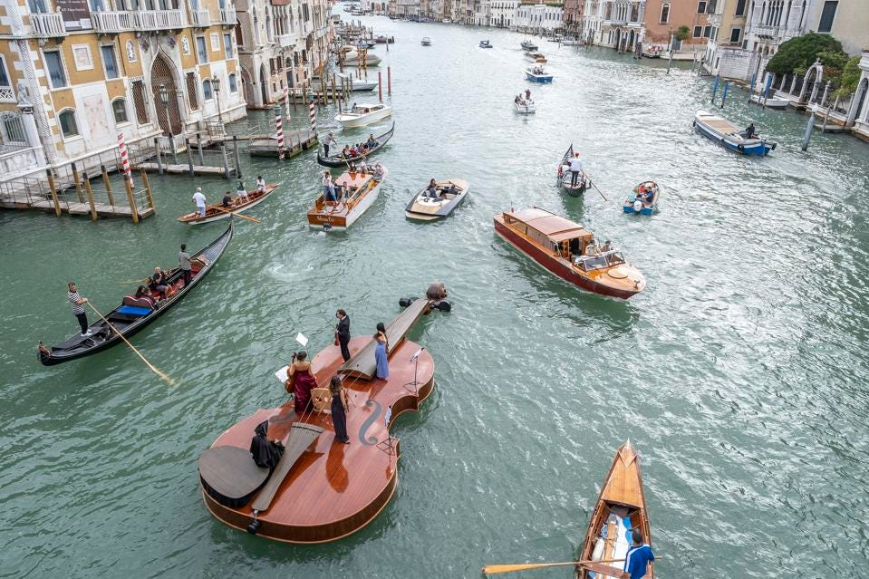
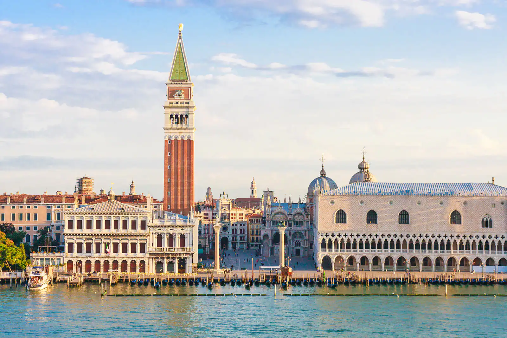
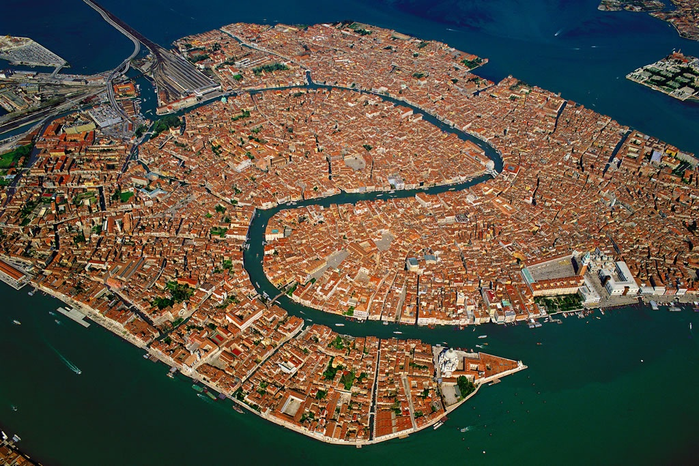

Veneția este împărțit în șase părți, numite sestiere: Dorsoduro, Santa Croce, San Polo,
San Marco, Cannaregio și Castello, cuprinzând 118 insule și 354 poduri. Piața San Marco poate fi
considerată "centrul centrului" orașului, una dintre cele mai frumoase din lume. Aici se găsește
Bazilica San Marco, Palatul Ducal și campanila bazilicii. Un alt simbol al orașului
este Podul Rialto pe care se găsesc magazine.
Alte importante monumente venețiene sunt: Arsenalul, Bazilica Santa Maria della Salute
și Bazilica Santa Maria Gloriosa dei Frari.
Orașul a fost clădit pe fundamente formate din milioane de piloni din lemn de esență tare
incastrați în stratele de roci de sub oraș.


Veneția are aproximativ 175 de canale[14], cu o lungime totală de aproximativ 38 km.
Canalele principale ale orașului sunt: Marele Canal (Canal Grande) și Canalul Giudecca (Canale della Giudecca).
Primul traversează orașul formând un „S”, al doilea separă centrul vechi de insula Giudecca.
Diferență de maree se cifra înainte la 60 cm. Canalele au fost inițial proiectate pentru aproximativ
1,85 m adâncime. De la sfârșitul secolului al XVIII-lea până în anii 1990, ele nu au mai fost curățate.

Alte puncte demne de reținut sunt insulele Murano, Burano, Torcello, Lido di Venezia și Pellestrina.
Murano este poate cea mai faimoasă insulă din Lagună, cu o tradiție importantă în prelucrarea artizanală a sticlei.
Burano atrage repede atenția prin casele viu colorate, fiind faimoasă și pentru broderiile sale.
Torcello, considerată cea mai mică dintre insulele lagunare, are un trecut nobil, chiar dacă astăzi are câteva zeci de locuitori.
Lido di Venezia este o fâșie de pământ care se întinde în mare. Este un obiectiv accesibil cu automobilul, îndrăgit de către turiștii interesați de plajă.
Pellestrina delimitează, împreună cu Lido, peninsula Chioggia și peninsula Jesolo, de lagună.



